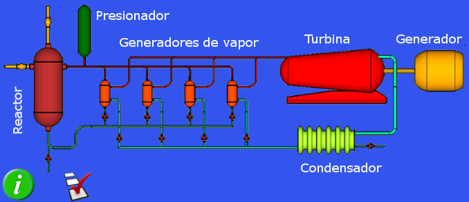

|
|
Sobre el esquema de la central, se puede hacer clic sobre los diferentes elementos para obtener información sobre ellos:
vaso del reactor, presionador, generadores de vapor, turbina, generador eléctrico, bombas del cicuito primario,
bombas del circuito secundario, bomba de llenado del reactor, condensador y bomba del condensador.

|